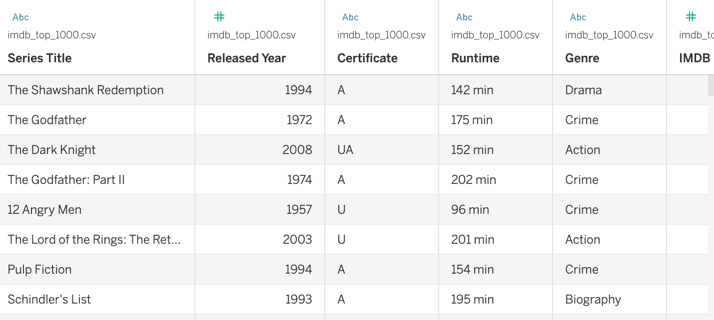
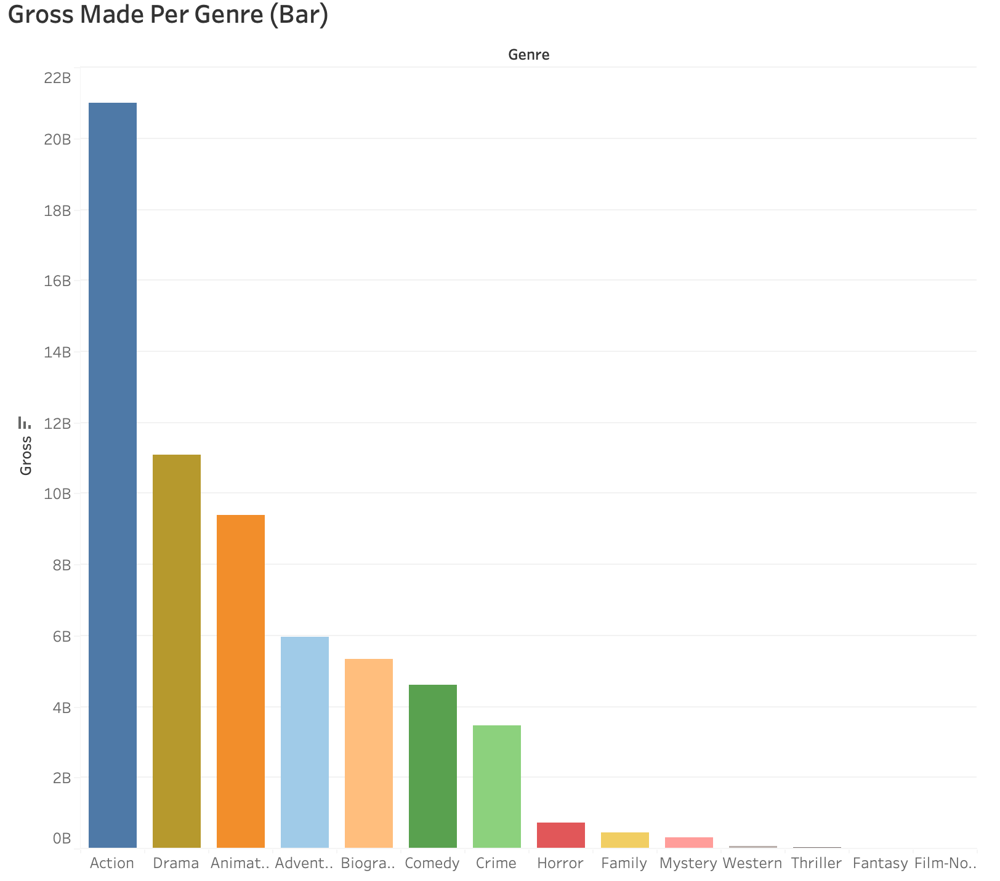
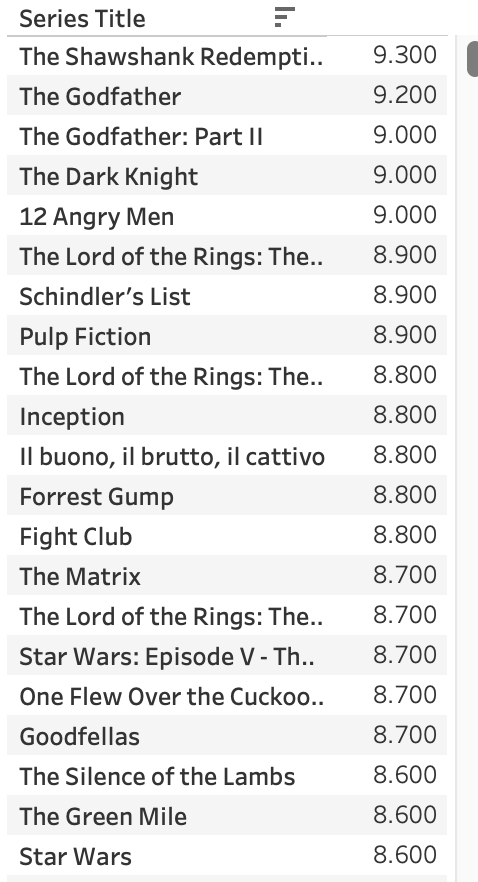
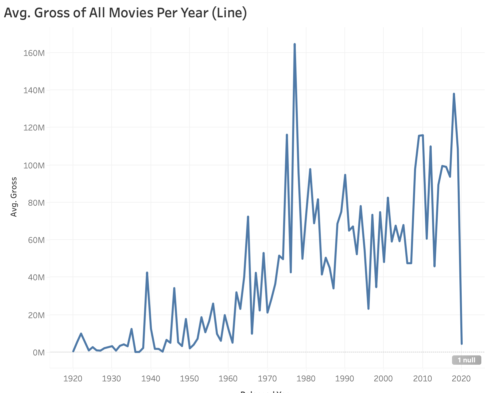
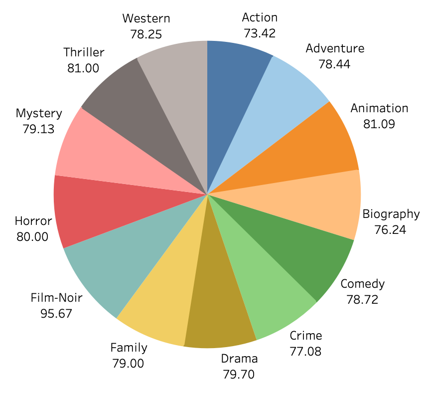

IMBD Project-Tableau
In this project we're continuing the project we started first in SQL where we used 2 different datasets for our query to develop tables and undercover some of the key points in our data. There are 4 different datasets we are using in this one, this is also a selected portion of the real data from around the world because we're using the same data we inserted into SQL in the previous part of the project.
Dataset

In this small screen grab from out data source we see theres columns for the series title, Genre, Runtime, IMBD rating, etc.
There's a bunch of different columns that we can use in Tableau to sort through and find trends that we can then visualize
into a dashboard.
Visualizations

In our first visualization we're measuring genre by the gross amount of money made in that particular genre. As we see the genre that
made to most amount of money by far is 'Action' with about 21 million made and the next highest made being 'Adventure'. This is a descending bar
graph that shows the range of money made in each genre of film and let's us know how the money is being distributed.

In our second visualization we just want to display the highest rated IMBD movies so we can have some variety to our dashboard and this
is the only way we can incorporate all the films in the dataset that people can scroll through to see. We excluded one piece of data that
exceeded the 1 to 10 scale IMBD uses to rate all their movies. The highest rated movie is 'The Shawshank Redemption' at 9.3 followed by a lot
of others close behind.

In our third visualization we want to see if theres any correlation between the year the film was released and the average amount of money made that
year across all film genres. We see the biggest spikes came in at 1977 and 2018. There's a big drop near the end that had to deal with covid and movies
not being watched at theatres across the world.

In our fourth and final visualization we're creating a pie graph of the metascores across all genres. This pie graph is a little misleading because it shows
film-noir as the highest average meta score genre but there were only a couple instances of that particular genre. Exlcuding that genre Animation and Thriller
were the 2 highest average meta-scored genres of the dataset.
Tableau Public Link
You can see the full dashboard of the project Here: IMBD Dashboard